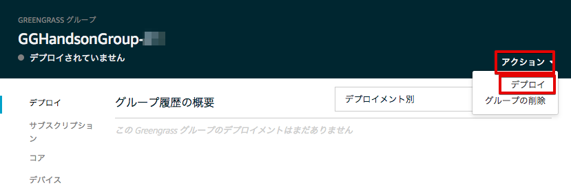
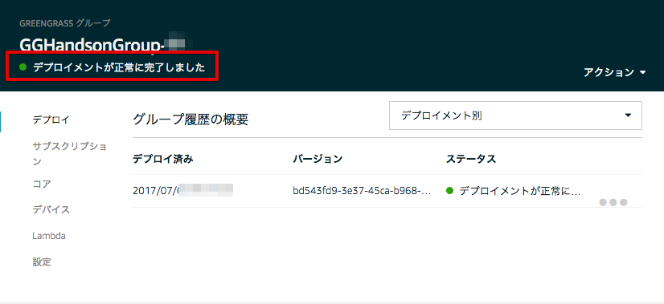
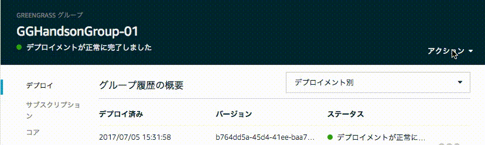
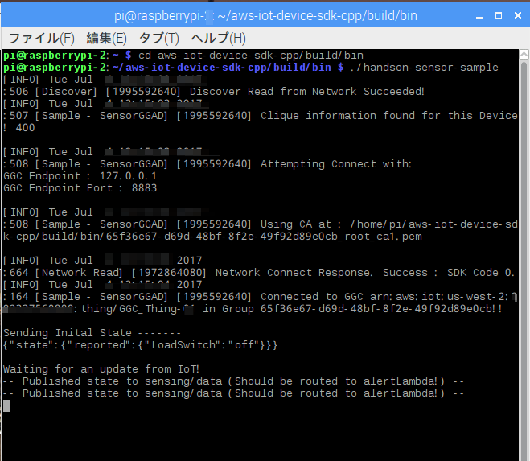
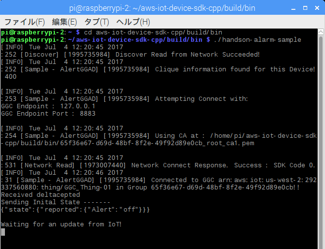
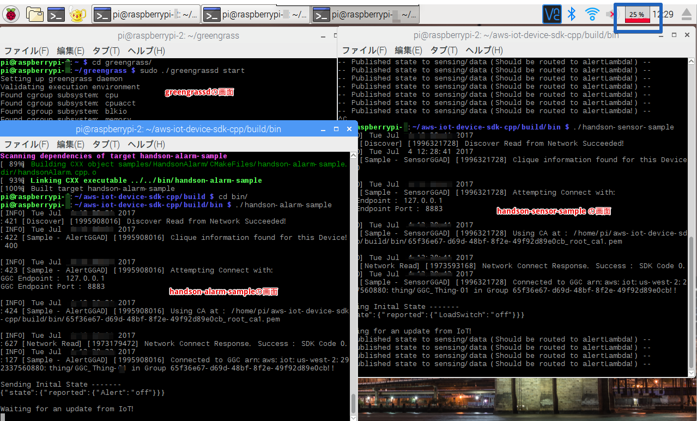
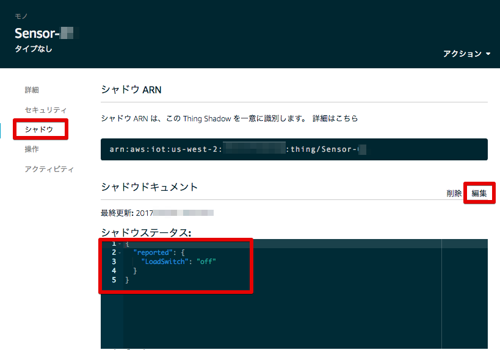
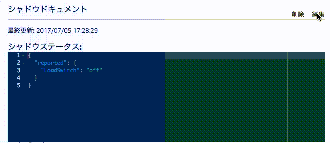
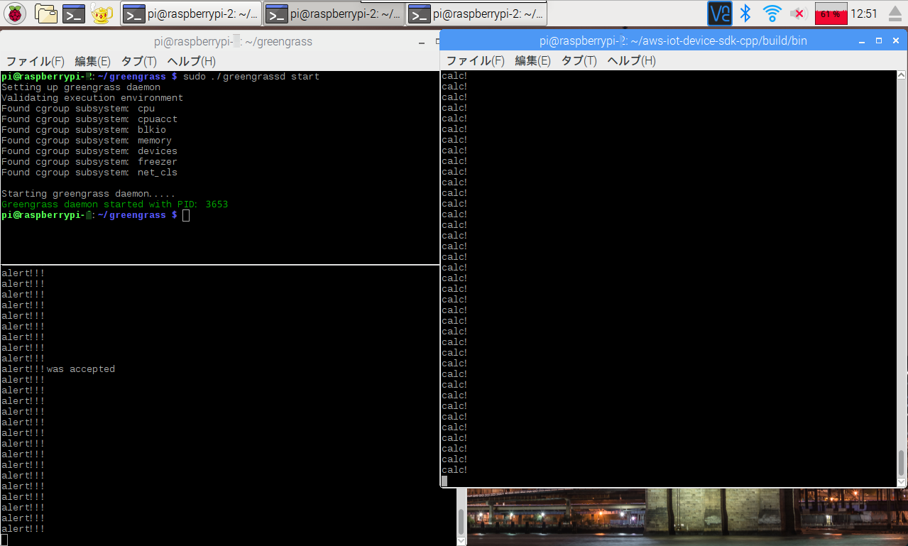
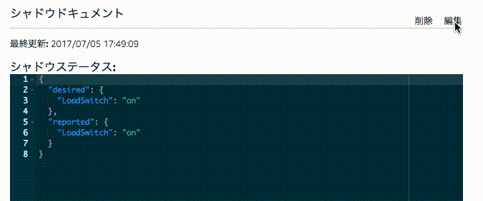

6. Greengrassコアへのデプロイと動作確認¶
AWS コンソールのGreengrassに戻ります。
Greengrassの設定画面に戻り、Greengrassグループ：GGHandsonGroup-<参加者番号> をクリックして下さい。

6.1. Greengrassの設定をデプロイする¶
Greengrassグループの設定画面が出てきます。右上の [アクション] メニューから [デプロイ] を撰んで下さい。
初回のでデプロイ時、「デバイスによるコア検出方法の設定」画面が表示されます。[自動検出] をクリックします。

デプロイが完了すると、「 デプロイメントが正常に完了しました」と表示されます。
下記は、デプロイのGIFアニメーションです。画像をクリックするとアニメーションがスタートします。このケースでは、デプロイにおよそ30秒程度かかっています。
デプロイに失敗する場合がありますので、その場合は、再度、デプロイを行って下さい。1分以上経ってもデプロイが完了しない場合、config.json 内の設定に誤りがある可能性があります。特に、”thingArn”,”iotHost”,”ggHost”を確認して下さい。コンソールを開き、~/greengrass/var/log/system/ 下のログを確認して下さい。
~/greengrass/var/log/ 下のファイルは、ユーザー “pi”ではアクセス出来ませんので、root権限でアクセスします。
sudo su -
cd /home/pi/greengrass/var/log/system
特に、下記のログファイルを確認してみて下さい。
connection_manager.log
ip_detector.log
localwatch
runtime.log
syncmanager.log
これで、デプロイは、完了しました。
6.2. 動作確認¶
6.2.1. センサーデバイスを起動する¶
Raspberry Piのリモート画面に移動します。
コンソールを開いて、cd aws-iot-device-sdk-cpp/build/bin に移動し、センサデバイス アプリを起動します。
cd aws-iot-device-sdk-cpp/build/bin
./handson-sensor-sample
センサーデバイス アプリ handson-sensor-sample が起動し、下記の様なメッセージが表示されます。
センサーデバイスは、Raspberry PiのCPUロードをトピック sensing/data でPublishし続けます。
6.2.2. アラートデバイスを起動する¶
コンソールをもう一つ開いて、cd aws-iot-device-sdk-cpp/build/bin に移動し、アラートデバイス アプリを起動します。
cd aws-iot-device-sdk-cpp/build/bin
./handson-alarm-sample
アラートデバイス アプリ handson-alarm-sample が起動し、下記の様なメッセージが表示されます。
アラートデバイスは、デバイスシャドウ のキー Alert の更新を待ち続けます。
画面の右上に、CPUロードが表示されています。通常は、25%程度です。
この時点で、greengrassd, handson-alarm-sample, handson-sensor-sample の３つのソフトウェアが同時に起動していることになります。
6.3. 動作確認¶
AWS コンソールのAWS IoT に移動します。
メニューから [登録] をクリックし、センサーデバイスをクリックします。

メニューから、[シャドウ] をクリックし、センサーデバイスのシャドウを表示します。
センサーデバイスのシャドウは、クラウドと同期する設定にしていましたので、この様に表示されます。
シャドウステータスに何も表示されない場合、サブスクリプションの設定かセンサーデバイスのクラウドに同期の設定に誤りが有る可能性があります。確認してみて下さい。
“LoadSwitch”: “off” の状態では、CPUロードは、25%程度です。CPUロードを上げてみましょう。
右上の [編集] をクリックして、下記の様に書き換えて下さい。
{
"desired": {
"LoadSwitch": "on"
},
"reported": {
"LoadSwitch": "off"
}
}
その後、右上の [保存] をクリックして下さい。クラウド上の “LoadSwitch” センサーデバイスのシャドウと同期し、”reported”の”LoadSwitch”が”on” になります。
Raspberry Piのリモート画面を見て下さい。
センサーデバイスが、”LoadSwitch” の状態が “on” になったことを認識し、CPUロードが上がる処理が実行され、センサーデバイス アプリは、”calc!” と表示します。Raspberry PiのCPU usageが 50% 程度に上がります。LambdaもCPUロードを確認していますが、40%以上に上昇すると、アラートデバイスのシャドウ “Alert”を “on”に更新します。アラートデバイスが、”Alert”: “on” を確認すると、アラートデバイス アプリが、“alert!!!” と表示します。
アラートが発生しない場合は、ウィンドウを動かしたりして、負荷を上げて下さい。
AWSコンソールで、”LoadSwitch”を “off”にすると、”alert!!!” は停止します。
